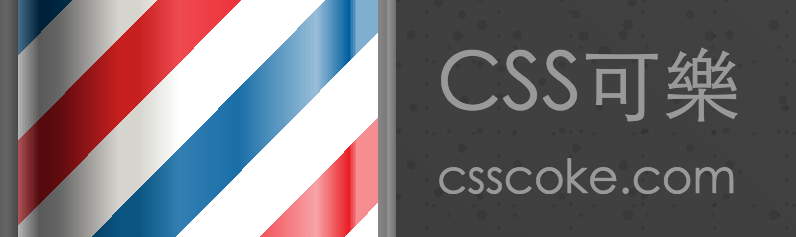

用 CSS3 畫理髮廳動態廣告跑馬燈
Amos 好久沒有用 CSS3 畫些好玩的 CSS3 小範例了，距離上次用 CSS3 繪製精美的膠囊 也已經快滿一年了(哇！也偷懶太久了吧)，趁著一個假日，跟好友 Fran 大師借了張他許久前畫的圖來試著畫看看，當初 Fran 大師曾經問過我是否有辦法製作圓型的漸層，當時看到這圖片時還想不到怎麼做出那顆金屬球體，現在想到了做法就來刻看看囉．
首先我們來看看整體的 html div 標籤使用了幾個，在這個例子中為了一些小細節的處理，原本只規劃了使用2~3個 div 去處理，但最後為了眾多的細節而不得不把 div 添加到了四個之多，以下是這次使用到的 html 標籤結構，分成理髮廳廣告燈的主體以及上下金屬球＋跑馬燈圓柱體。
CSS3 理髮廳跑馬燈的11個細節
在撰寫這個範例的過程中，有些小細節是慢慢刻出來的，對於畫面中的光影折射合理性，在過程中慢慢地去修正與添加不同位置的陰影與色彩，另一方面也考量到 CSS 原始碼的簡潔度(我還不習慣用 sass 刻 code )，整體大概花費了我4個小時去處理完成這個作品，其實到現在都還是覺得尚有細節可以去修正，但是也都只是錦上添花罷了，就先公開分享給大家看看囉～
理髮廳跑馬燈的金屬球光線左右不是對稱的
在這邊 Amos 先預設光線是從右上角往左下角打，所以光線的話，應該是右邊亮的部位比較多，而左邊亮的部位比較少，所以在設定這個部分的時候，把左右兩邊的明暗設定為不同，而這部分的色彩應用方式原本是想採用 CSS3 的 radial-gradient 來製作，但是後面不論怎麼修改都不符合 Amos 所要的視覺效果，所以後面 Amos 改用了另外一種寫法，先讓 Amos 賣個關子一下，各位可以試著思考看看是否有其他 CSS3 屬性可以達到類似的效果的，老實說這做法連 Amos 自己都覺得很偏門XD，而且這是我撰寫 CSS3 上覺得最困難呈現的地方了．